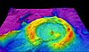

elevation
property

Source: Wikipedia
Wikipedia Page (Something wrong with this association? Let us know.)
Wikidata Page (Something wrong with this association? Let us know.)
Occurs in:
- drainage-basin__max_of_elevation
- drainage-basin__mean_of_elevation
- drainage-basin__min_of_elevation
- drainage-basin__range_of_elevation
- drainage-basin_centroid__elevation
- drainage-basin_outlet_center__elevation
- bedrock_surface__antigradient_of_elevation
- bedrock_surface__elevation
- bedrock_surface__increment_of_elevation
- bedrock_surface__time_derivative_of_elevation
- bedrock_surface__x_derivative_of_elevation
- bedrock_surface__y_derivative_of_elevation
- bedrock_surface_land-mask__elevation
- bedrock_surface_sea-mask__elevation
- channel_bottom_surface__cross-stream_derivative_of_elevation
- channel_bottom_surface__downstream_derivative_of_elevation
- channel_bottom_surface__x_derivative_of_elevation
- channel_bottom_surface__y_derivative_of_elevation
- channel_centerline_endpoints__difference_of_elevation
- channel_entrance_center__elevation
- channel_exit_center__elevation
- channel_water_surface__cross-stream_derivative_of_elevation
- channel_water_surface__downstream_derivative_of_elevation
- channel_water_surface__elevation
- channel_water_surface__x_derivative_of_elevation
- channel_water_surface__y_derivative_of_elevation
- channel_x-section__max_of_elevation
- channel_x-section__min_of_elevation
- river-delta_apex__elevation
- river-delta_channel~main_entrance_center__elevation
- river-delta_distributary_outlet_center__elevation
- river-delta_distributary_outlet_side~left__elevation
- river-delta_distributary_outlet_side~right__elevation
- river-delta-front-toe__mean_of_elevation
- earth__range_of_elevation
- earth_surface_earthquake_epicenter__elevation
- earth_surface_seismic-station__elevation
- earth_surface_viewpoint__elevation
- glacier_bed_surface__elevation
- glacier_bottom_surface__elevation
- glacier_top_surface__elevation
- glacier_top_surface__max_of_elevation
- glacier_top_surface__mean_of_elevation
- glacier_top_surface__mid-range_of_elevation
- glacier_top_surface__min_of_elevation
- glacier_top_surface__range_of_elevation
- glacier_top_surface__time_derivative_of_elevation
- land_subsurface_phreatic-zone_top__elevation
- land_surface__domain_max_of_elevation
- land_surface__domain_max_of_increment_of_elevation
- land_surface__domain_min_of_elevation
- land_surface__domain_min_of_increment_of_elevation
- land_surface__domain_range_of_elevation
- land_surface__domain_time_max_of_elevation
- land_surface__domain_time_min_of_elevation
- land_surface__elevation
- land_surface__increment_of_elevation
- land_surface__laplacian_of_elevation
- land_surface__time_derivative_of_elevation
- land_surface__time_max_of_elevation
- land_surface__time_min_of_elevation
- land_surface__x_derivative_of_elevation
- land_surface__x_x_derivative_of_elevation
- land_surface__x_y_derivative_of_elevation
- land_surface__y_derivative_of_elevation
- land_surface__y_y_derivative_of_elevation
- land_surface_base-level__elevation
- land_surface_base-level__time_derivative_of_elevation
- land_surface_water_surface__elevation
- land_surface_water_surface__time_derivative_of_elevation
- land_surface_water_surface__x_derivative_of_elevation
- land_surface_water_surface__y_derivative_of_elevation
- model_grid_edge~west_sea_water__elevation
- projectile_trajectory_origin__elevation
- projectile_trajectory_target__elevation
- sea_bottom_surface__elevation
- sea_bottom_surface__time_derivative_of_elevation
- sea_bottom_surface__x_derivative_of_elevation
- sea_bottom_surface__y_derivative_of_elevation
- sea_surface__elevation
- sea_water_surface__elevation
- soil_water_phreatic-zone_top_surface__elevation
- soil_water_phreatic-zone_top_surface__x_derivative_of_elevation
- soil_water_phreatic-zone_top_surface__y_derivative_of_elevation
- model_grid_layer~topmost_top__elevation
- model_grid_layer_bottom__elevation
- groundwater_surface__reduction_of_elevation